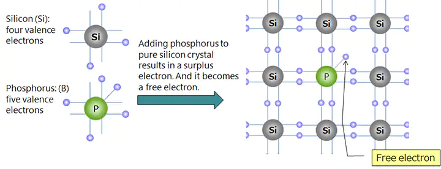
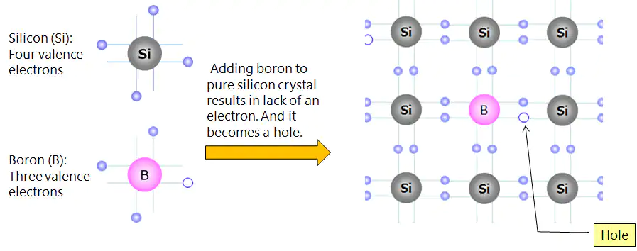

Types of Semi‐Conductor
- Intrinsic Semiconductor
- Extrinsic Semiconductor
-
- Intrinsic Semiconductor
-
It is one which is made of semiconductor material which is rarely pure.
- Convalent bonding with same atom of element.
- (Si) Which is silicon and (Ge) which is Germanium are two most widely used semiconductor materials.
-
The reason for choosing them is because the energy required to break their covalent bonds is very small that is
- 1.12 eV for Silicon
- 0.72 eV for Germanium
- Both elements have the same crystal structure.
- In
Si
andGe
, They have four e‐ and four holes in its valence shell. -
- Hole
- A hole is defined simple as an absence of an e‐ in shell where one could exist.
- Every atom in intrinsic semiconductor is parent atom which can either donate or accept the e‐
Conduction in intrinsic Semiconductor
Effect of Heat and Light on Intrinsic Semiconductor- Current is Passed through the semiconducror which will increase the temperature of the semiconductor.Due to increase in temperature
- it will start breaking the covalent bonds, and create thecharge carriers.
- e‐ will move freely because electrical effect is busy in mantaining covalent bonds.
- When external electric field is applied then free electrons starts to move towards the +ve terminal of battery and holes to ‐ve terminal.
- As holes reach the ‐ve terminal, they combined with e‐ and destroy them.
\1.png)
Fermi level in an inrinsic semiconductor- At absolute temperature i.e., at 0K , all e‐ in intrinsic semiconductor are tightly held by their parent atom. Hence, no free e‐ is available for the flow of current. so it behaves like a perfect insulator.
- But when the material is heated, e‐ break away from their atoms and create a vacancy.This produced holes in valence band and free e‐ in conduction band.
- Conduction can then occur by e‐ movement and by holes transfer.
- Thus, with the increase in temperature, the rate of generation of electron‐holes increases.
- Concentration of charge carriers increases.
- with increase in temperature the conductivity increases and resistivity decreases i.e. NTC
- Hence we can say that , intinsic semiconductor behaves as a good conductor when temperature is increased.
- Fermi Level is simply a reference energy level
- It is the energy level at which probability of finding e‐ above it(in conduction band) is equal to the probability of finding holes below it( in valence band)
- Simply, it can be considered as average energy level of electrons.
-
- Exrinsic semiconductor
-
- Semiconductor material is made from two or more atoms.
- It is done through doping.
- The intrinsic semiconductor conductivity can be increased many times just by adding very small quantity of impurity(1 atom per 106 pure atoms ). This process is called doping and the doped material is called impurity or extrinsic semiconductor.
- Ge and Si are tetravalent. So, the impurity or doped material may be either trivalent or pentavalent
- According to the impurity introduced these are of two types
- Doner type(N‐ type)
- Accepter type(P‐type)
- N TYPE EXTRINSIC SEMICONDUCTOR
- When a small amount of pentavalent impurity such as Ar, Sb, Bi, P is added to pure semiconductor crystal during crystal growth.
- Si(1 atom per 1012 atoms ). Ge(1 per 109)
- N stands for negative
 - Majority charge carriers (e‐)
- MInority charge carriers ( holes)
- P TYPE SEMICONDUCTOR
- when a small amount of trivalent impurities such as B, Ga, In, Al is added to a pure semiconductor during crystal growth.
- P stands for positive 
- Majority charge carriers(holes)
- Minority charge carries(e‐)
EFFECT OF TEMPERATURE ON EXTRENSIC SEMICONDUCTOR
Addn of small amount of impurity produces a large amount of charge carriers in an exrensic semiconductor.
This number is large that the conductivity of an exrensic semiconductor is many times that of intrinsic semiconductor at room temperature.
If the temperature of extrensic semiconductor is raised, the additional thermal energy increases the thermally generated carriers.
As a result, the concentration of minority carriers incr3eased. Eventually, a temperature is reached, called critical temperature.- 85°C for Ge
- 200°C for Si
When number of covalent bond that are broken is very large, so that number of holes becomes same as number of e‐.
Hence, it starts to behave like an intrinsic semiconductor but with higher conductivity.